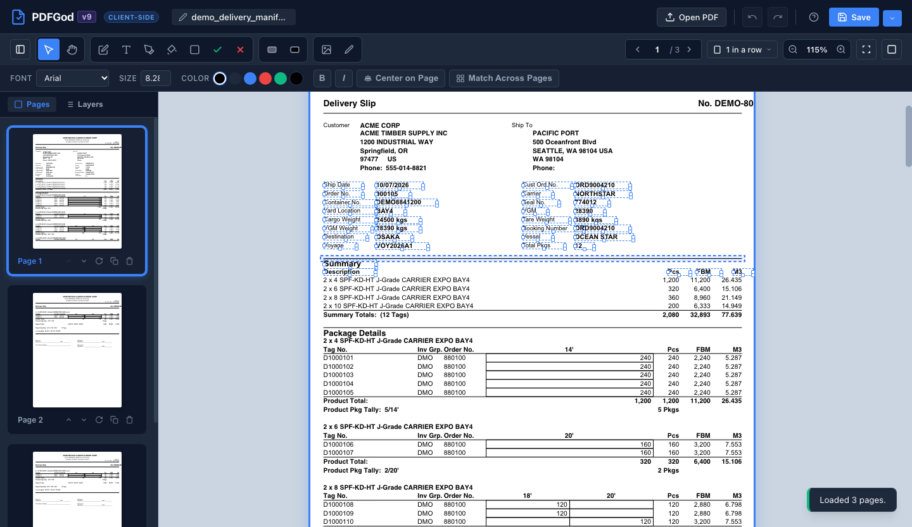

True PDF Stream Redaction & AES-256 Encryption vs. Cloud Upload Risks
Understanding why visual black rectangles leak sensitive text, how stream-level token redaction strips confidential strings cleanly, and how client-side 256-bit AES works.
1. The Hidden Danger of Cloud PDF Editors
Many free online PDF editors operate on a client-server upload model: as soon as you drop a tax return, medical Explanation of Benefits (EOB), passport scan, or bank statement onto the webpage, your browser transmits the unencrypted PDF over the network to remote cloud servers. Even services promising automatic deletion create a third-party data-exposure surface outside your control.
PDFGod was architected strictly as a zero-server browser application. Every parsing step (PDF.js), vector edit (PDF-Lib), and cryptographic operation occurs exclusively inside your device's local RAM.

2. Visual Masking vs. True PDF Stream Redaction
A common security mistake when censoring PDF documents is placing a black box overlay on top of a Social Security number or salary figure. Visually, the text appears hidden—but in the underlying PDF content stream, the original glyph operators (BT ... (123-45-6789) Tj ... ET) remain intact underneath the black box and can still be highlighted, copied, or extracted by scripts.
How PDFGod Strips Redacted Text from Content Streams
- Using Select Text (
E) / Batch Redaction: When you select existing PDF text spans or use Batch Group Editing to remove or replace lines, PDFGod parses and rewrites the page's uncompressed PDF content stream tokens (including nested XObject Form streams) to remove the original text drawing operators before exporting—so redacted text is physically gone from the output PDF bytes. - Flattening Visual Regions: For visual form masking, whiteout/blackout blocks clean up underlying form layout artifacts while preserving vector crispness everywhere else on the page.
3. Client-Side 256-Bit AES Encryption & Permission Unlocking
Introduced in v15 and refined through v18, PDFGod integrates client-side cryptographic handlers (pdf-lib-encrypt + Web Crypto) directly inside your browser:
- Password-Protected Opening: Encrypted PDFs are unlocked locally in memory only after you enter the document password. Owner permission flags blocking printing or copying can also be unlocked for documents you authorize.
- AES-256 Locking on Export: Click the lock icon in the top header—or choose a password inside the Save As... dialog—to seal exported PDFs with 256-bit AES encryption prior to writing the bytes directly to disk.